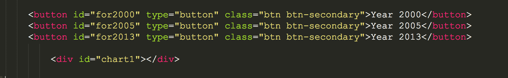
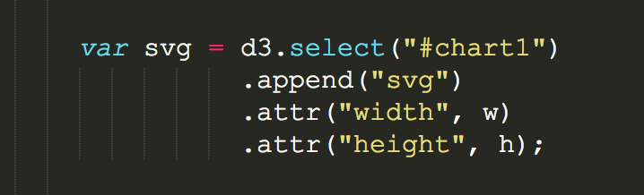
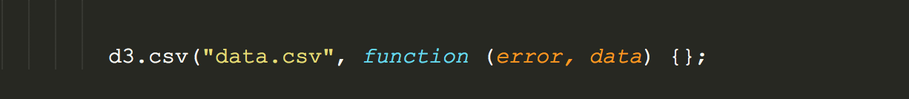
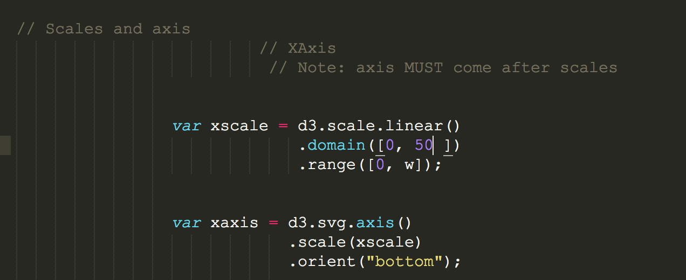
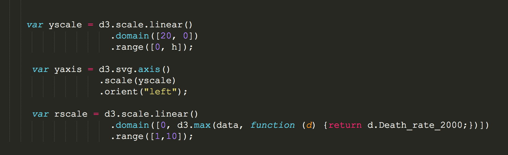
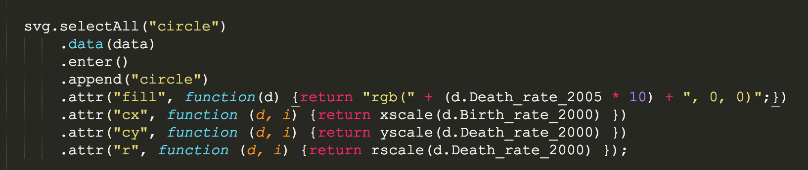
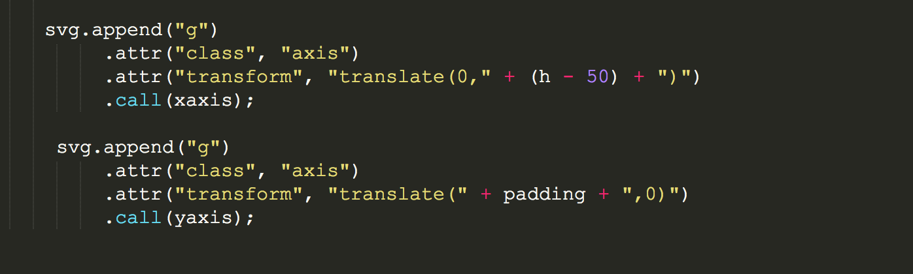
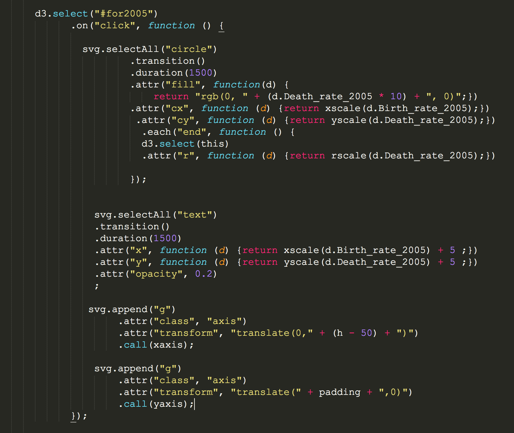
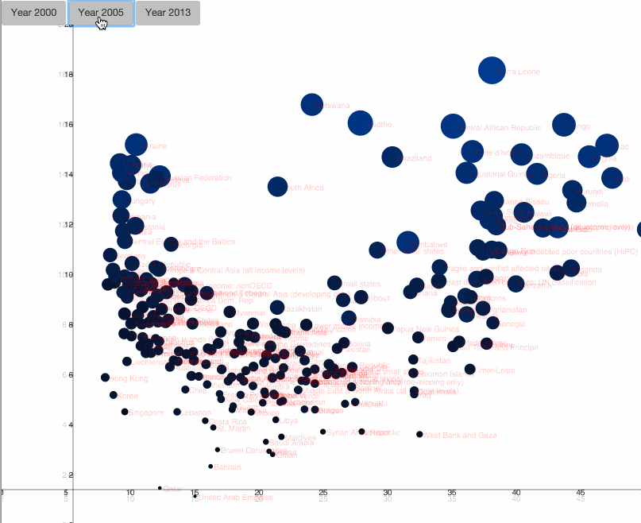

Javascript Libraries
- D3.js
- dc.js (based in d3)
- C3.js (based in d3)
- Dimple.js (based in d3)
- Highcharts
- Plot.ly in javascript which we going to explore in a minute
- Leaflet.js
- Epoch.js for real time stuff (here a blog post about it)
- graph-scroll.js (Simple scrolling events for d3 graphs. Based on stack)
Setup:
Before we get started to produce something for the browse window, lets install/download quickly Yeoman, which helps me to set up an environment really quickly, plus it has a build in local server that updates any changes automatically (much nice to see your visualisation grow this way).

D3 tutorial: How to see something in your browser window?
So lets start simple. In order to see any data bound on the browser, we need our local server to work (or cd in your directory of choice, and run a local server via python ). Once its running, in our HTML standard setup file we include:
<script src="//d3js.org/d3.v3.min.js" charset="utf-8"></script> to access Mike's library.
In the mood for circles?
- Firs we need to reference our chart with a div in the body via
<div id="chart1"></div>. - Then in the
tags, we can start with the magic (you can also reference the .js file)
We added three buttons, which will allow the reader later to change the view for the different years:

3. lets set the scene with the svg element, which I always think of as the canvas to draw on. We specify width, height, and a padding value (in pixels).
 Check the console in Chrome, there you have it:
Check the console in Chrome, there you have it:

Lets start writing some D3 code:
In the javascript section, the first thing we will add is the svg. We already put it into a variable called svg.

Next, we need to load in our dataset. D3 helps us with d3.csv function, which turns our CSV data into an array of objects. Console.log it out to your chrome console via console.log(data)

Now we set the scales. Domain is the data input, range is the data output. 
Same for the y-axis and the radius r. 
Add the circles to your svg 
append a group element to display the axis svg elements (the css class added) 
Now to the fun part, the transitions when you click on the buttons (we do this for every button but there are smarter ways to handle this.)  There are many ways to do this, but one smart way would be to add raw javascript in order to write less code (a switch or if function).

Not finished or advanced, not even fancy, but it gives you an idea how to get started with interactive charts in d3!Awesome, these are the basics. Lets pause here and motivate you to take it from here. The book by Scott Murray is helpful to get started with d3. Other resources are listed here.